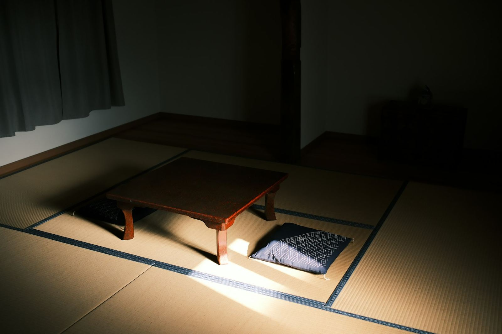
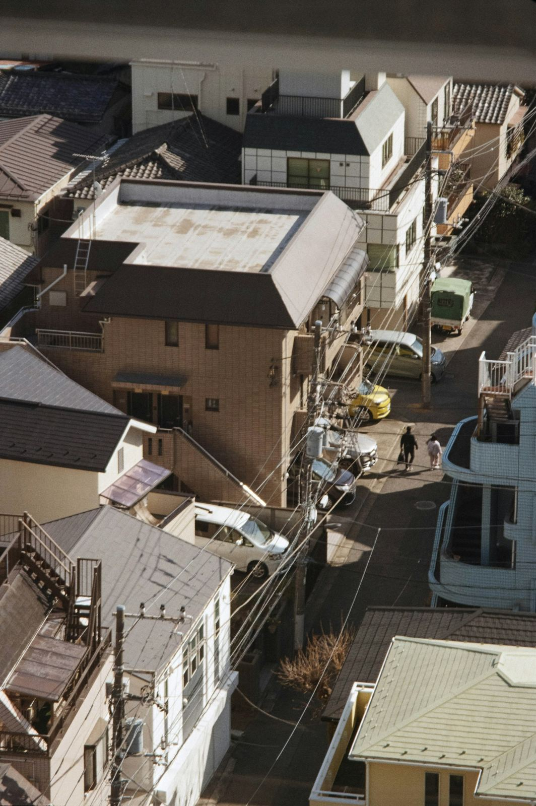

埼玉県ふじみ野市亀久保 訪問介護
住み慣れた家で
今日も一日を過ごすために
ヘルパーがご自宅にお伺いして、体のことと暮らしのことをお手伝いします。
サービスをご利用いただける時間は、朝8時30分から24時までです。
049-264-3247
※画像はイメージです
What we do
お手伝いできること
01
体のことのお手伝い
お食事、お手洗い、お着替え、体を清潔に保つこと。ご本人ができることはご一緒に、難しいところは手を添えて。
ケアプランに沿って、訪問介護計画書を作ってからお伺いします。訪問介護の身体介護として承っている範囲です。ここに書かれていないことでもご相談ください。
02
暮らしのことのお手伝い
お掃除、お洗濯、お買い物、お食事の支度。ひとりでは手が回らなくなったところを、生活全般にわたってお手伝いします。
訪問介護の生活援助として承っている範囲です。ここに書かれていないことでもご相談ください。
朝も夜も、この時間の中でお伺いしています。
8:3024:00
サービスをご利用いただける時間です。
土曜・日曜・祝日の対応については、お電話でご確認ください。
※画像はイメージです
Conditions
お受けできること
ケアマネジャーの皆さまが最初に確かめられることを並べました。公表している内容だけを載せていますので、書かれていないことはお電話でおたずねください。
| 訪問介護 | お受けしています |
|---|---|
| 介護予防のご利用 | お受けしています |
| サービスを ご利用いただける時間 | 8時30分〜24時00分 |
| 事務所の受付時間 | 平日 9時00分〜17時00分 |
| 土曜・日曜・祝日 | お電話でご確認ください |
| 通院等の乗り降りのお手伝い | お電話でご確認ください |
| 年末年始・お盆 （12/31〜1/3・8/13〜8/15） | お電話でご確認ください |
| 実施地域の外へお伺いする場合 | 自動車でお伺いした場合、地域を超えた地点から1kmにつき50円を申し受けます |
| キャンセルのご連絡 | 12時間前までは基本料金の50%、それ以降は100% |
出典：介護サービス情報公表システム（埼玉県・事業所番号 1173001494）の公表内容
Our team
はたらく人のこと
10年以上の経験がある人が多い事業所です
ご自宅にお伺いする仕事は、慣れるまでに時間がかかります。ここには、その時間を積んできた人が多くいます。
- 14人職員の数
（常勤3人・非常勤11人） - 78.6%訪問介護員等のうち
経験年数10年以上の割合 - 3人介護福祉士の資格を持つ
訪問介護員等（非常勤）
数値はいずれも公表内容（記入日 2025年11月22日）によります。
Our policy
わたしたちの考え
利用者様の言葉を傾聴し、優しさと思いやりを込めて提供致します。
御利用者様の心身の特性を踏まえ、その有する能力に応じて自立した日常生活を営むことが出来るよう訪問介護計画書を作成し、その計画に沿い生活全般の援助を行います。事業の実施にあたっては、御利用者様の意思及び人格を尊重し、常に御利用者様の立場に立ちサービス提供を行います。
また、地域との連携を重視し、関係市町村、居宅介護支援事業者、地域包括支援センター、居宅サービス事業者、並びに保健医療サービス・福祉サービスを提供する事業者との綿密な連携を図ります。
介護サービス情報公表システムに公表されている運営方針・サービスの特色をもとにしています

Area
お伺いする地域

5つの市と町にお伺いしています
- ふじみ野市
- 川越市
- 富士見市
- 三芳町
- 所沢市
この範囲の外にお住まいの場合も、いちどご相談ください。自動車でお伺いした場合は、実施地域を超えた地点から1キロメートルにつき50円を申し受けます。
Information
事業所のご案内
| 事業所名 | アライヴふじみ野 |
|---|---|
| サービスの種類 | 訪問介護（介護予防にも対応） |
| 所在地 | 〒356-0051 埼玉県ふじみ野市亀久保3丁目5番23号 |
| 電話・FAX | 049-264-3247 |
| 事業を始めた日 | 2022年9月1日 |
| 事務所の受付 | 平日 9時00分〜17時00分 |
| 事務所のお休み | 土曜・日曜・祝日、12月31日〜1月3日、8月13日〜8月15日 サービスをご利用いただける日時は上の「お受けできること」をご覧ください。 |
| 事業所番号 | 1173001494 |
上記はいずれも介護サービス情報公表システム（埼玉県）に公表されている内容です。